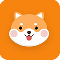
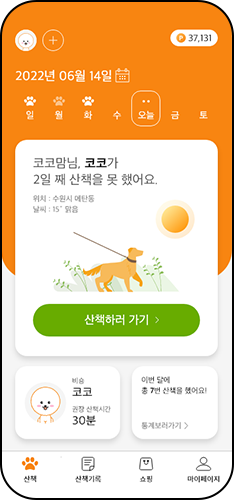
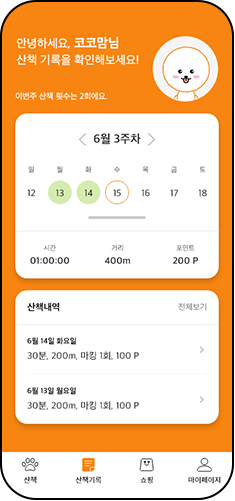

로고
Home
About
Project
Skills
Contact

반려견 산책어플
'킁킁킁'
Moblie Re-Design
사용자를 헷갈리게 하는 UI를 수정하고 APP에 대한 접근성을 높일 수 있도록 편의 기능을 추가했습니다.


프로젝트 소개
프로젝트 목표
기존 앱의UI/UX 리디자인을 통한 UX Vision 달성
작업기간
22.04.19 ~ 22.06.28
리디자인 앱
킁킁킁 (반려견 산책 리워드 앱)
이 앱을 선택한 이유
2020년 말 기준, 반려인 1500만 시대!
증가하는 반려 인구만큼 산책 앱 사용량이 많아지는 가운데,
사용자를 헷갈리게 하는 UI 디자인을 수정하고 저장된 산책일지를 수정,
삭제하는 등
사용자가 편리하게 사용할 수 있도록 리디자인
했습니다.
작업 과정
1. 리디자인 앱 선정
2. 선정앱 분석
3. 데스크 리서치(사용자층, 경쟁사 분석)
4. UX 비전 수립
5. 페르소나 설정
6. 시나리오 설정
7. 사용자 여정지도 제작
8. 워크플로우
9. 프로토타입 제작
담당 업무
커뮤니케이션 역할
업무 분배, 일정 체크 , 팀내 의견 조율
데스크 리서치
1. 경쟁 앱 분석 : ‘펫피’ 앱 리서치 및 장단점 분석
2. 킁킁킁 앱 장단점 분석 및 IA(정보구조도) 정리
3. 어플 사용층 자료 수집, 타겟층 분석 리서치 : 80%
사용자 및 타겟 설정
1. 페르소나 설정 : 80%
2. 사용자 시나리오 작성: 90%
3. 사용자 여정지도 작성: 80%
프로토타입/와이어프레임 제작
1. 와이어 프레임 제작 : 100%
2. 프로토타입 제작 : 50%
기타 디자인 업무
스플래쉬 이미지 제작 : 70%
프로젝트 결과 & 개선사항
사용자 편의 기능 추가
1. 간편 로그인 기능 추가
2. 코칭페이지를 제작하여 사용자에게 앱의 이해도 높임
혼란을 주던 UI 디자인 수정
1. 간편 로그인 기능 추가
2. 중구난방이던 버튼 디자인 통일
주기적인 산책/건강 체크 가능
1. 캘린더를 활용한 산책 체크 기능 추가
2. 활동 데이터를 기반으로 통계정보 제공해 반려견 건강관리 가능해짐
프로토타입 Preview
프로젝트 평가
부족한 점
숲을 보지 못하고, 나무 심는 데 급급했던 점. 진행 내용을 하나의 문서로 합치는 시간이 있었는데, 처음엔 장점이라고 했던 기능이 나중엔 단점이 되어 있었음.
아이폰 버튼 크기, 여백 등에 대한 이해도 부족했던 점. 아이폰 디자인 가이드라인을 참고하여 정리할 수 있었음.
잘한 점
런처아이콘, 스플래쉬 이미지를 직접 제작한 점
팀원의 피드백을 적극 수용해 반영하고, 팀원이 만든 자료도 꼼꼼히 분석하고 피드백한 점
벤치마킹 앱 등 참고할만한 내용들을 최대한 많이 찾고, 적용해보려고 노력한 점
배운 점
스타일 가이드의 중요성
을 느꼈다. 디자인 기준이 정립되니 좀더 빠른 시간에, 통일된 느낌의 앱을 만들 수 있었다.
객관적과 신뢰성 확보를 위해
참고자료를 잘 정리해둬야 한다.
자료를 찾는 즉시 정리하는 습관이 생겼다.
논리 있는 기획이 중요
했다! 첫 페이지부터 마지막까지, 우리가 만든 논리를 끌고 갈 수 있도록 첫 단계부터 탄탄히 기초를 다져나가야 한다는 점을 배웠다.
프로젝트를 마치며
3명으로 시작한 팀플이었지만, 1명의 중도 하차로 두 명이서 단촐히 작업하게 됐습니다.
타팀에 비해 손이 부족하니 작업이 더디게 느낄 때가 있었지만 각자 잘하는 분야에 집중해 업무를 분배해 정해진 기한 내에 프로젝트를 마칠 수 있었습니다.
프로젝트 발표와 질의응답 시간에도 높은 완성도로 집중을 받기도 하였고, 청중들의 긍정적인 반응이 있어 뿌듯했던 작업이었습니다.
이번 팀플을 통해 기획과 디자인 적으로 한층 더 발전할 수 있는 기회를 얻을 수 있었고, 협업의 방식을 체득할 수 있는 좋은 시간이었습니다.
상세 페이지 보기
프로토타입 보기
사이트 이동
PROJECT2
PROJECT4